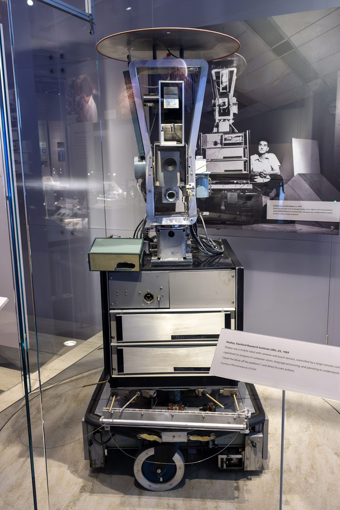
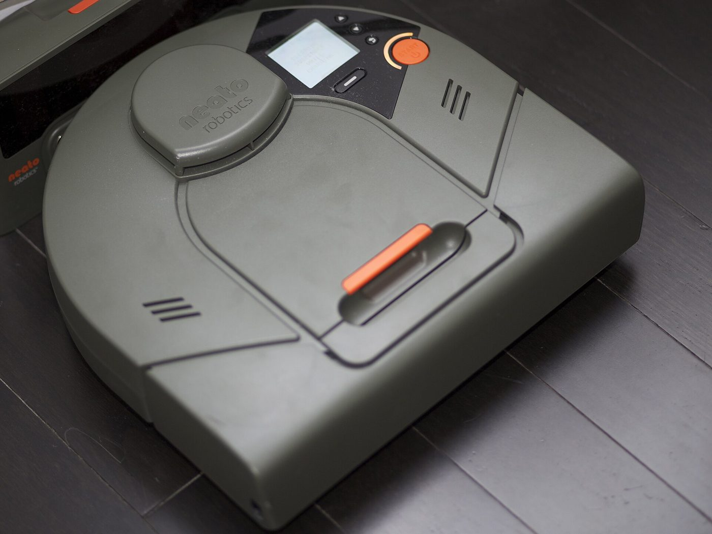
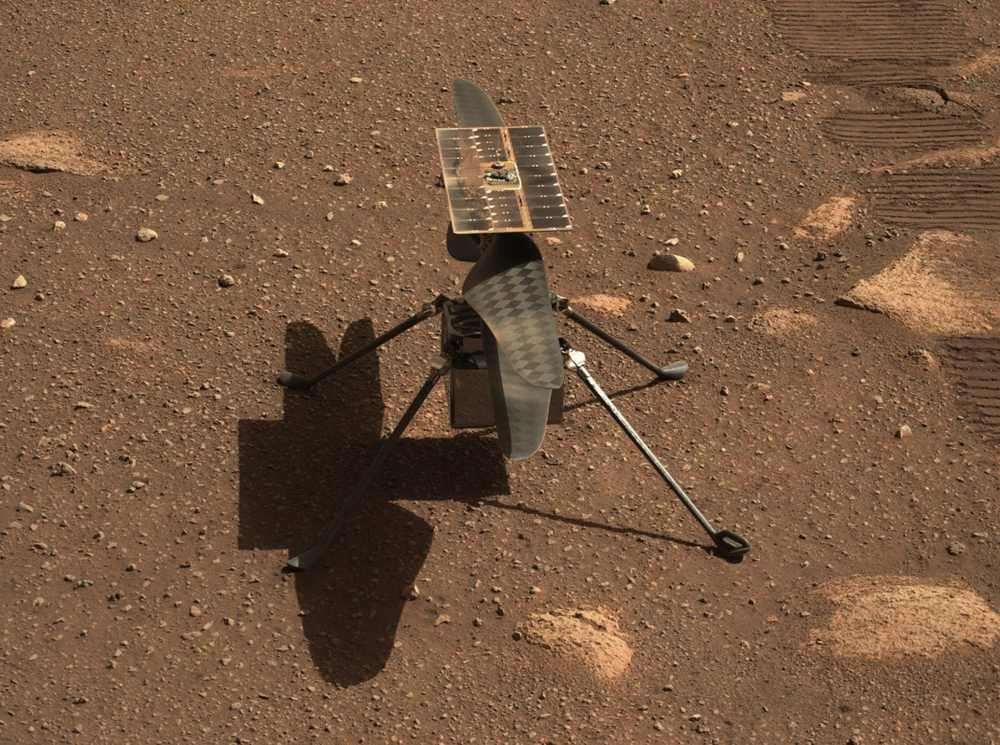
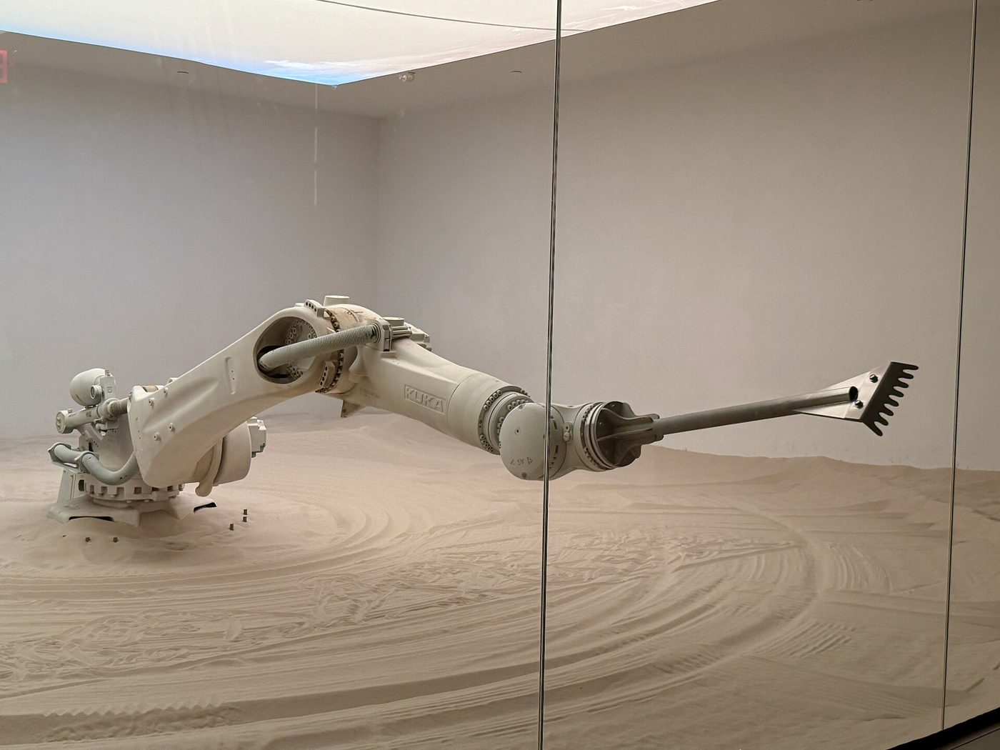
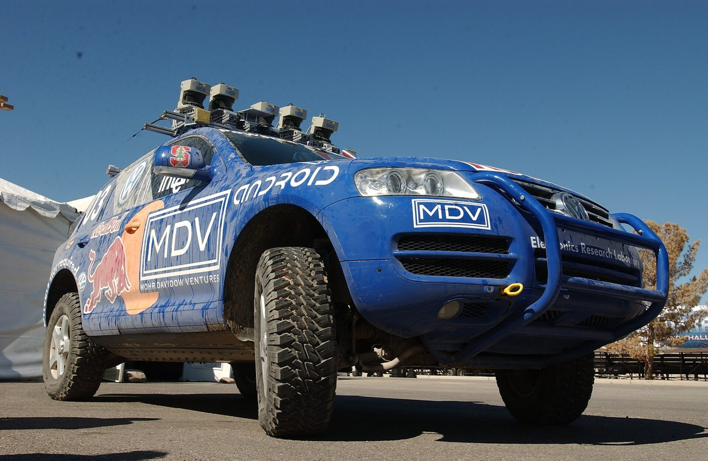
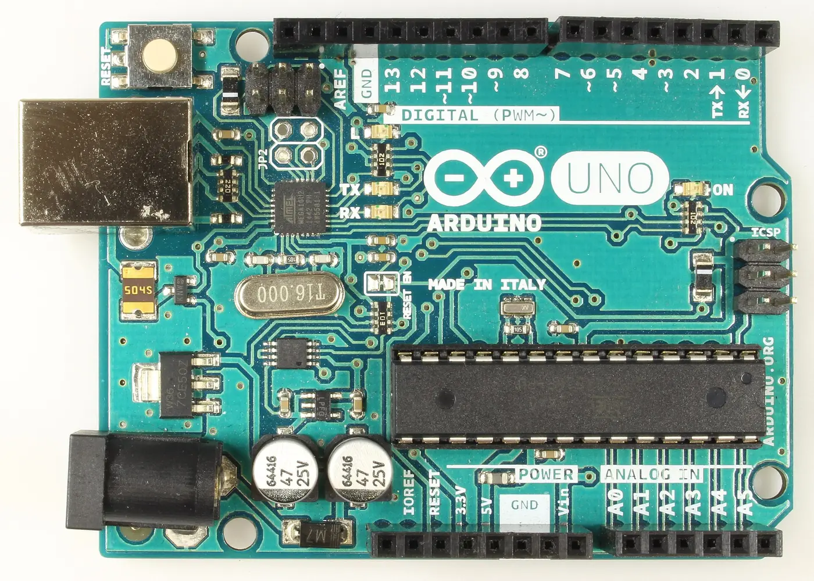

Unplug USB or battery power before you change any wiring. Build first, power second.
Engineering · Robotics Intro · Lab Safety
What Makes a Robot a Robot?
A robot isn't defined by metal arms or glowing eyes. A robot is a machine that senses the world, decides what to do, and acts, then checks again, over and over, with no person in the middle. Today you'll test that definition on real machines, drive a robot whose brain you choose, and meet the parts you'll build with all year.
← Back to EngineeringTHE ROBOT LOOPLIVE DEMO
Press run: a robot vacuum notices a chair leg and steers around it.
Core vocabulary
Four words, one repeating loop
Every robot, from a robot vacuum to a factory arm to a Mars rover, is built from the same four ingredients. Engineers often shorten them to sense → think → act. Click each card to flip it.
Here are the formal terms (tap a blue word for its pronunciation): a sensor feeds a microcontroller, which drives an actuator, and the feedback loop closes the circle. When that loop runs with no human making the decisions, the robot is autonomous.
Test the definition
Robot or not?
Use the loop as a test. For each machine, ask: What does it sense? Who decides? What does it move? If a person has to make the decision every time, the loop isn't closed by the machine. Vote, then read the reasoning. Some of these are honestly debatable, and that's worth arguing about.
Interactive lab
Robot Lab: build the brain
This little two-wheeled robot is loose in a room. You choose its sensor, the rule its controller follows, and how hard its motors push. Watch the three boxes under the arena: they show what the robot sensed, what it decided, and what it did on every pass through the loop. The code underneath is the Arduino program your choices would make, with the running line lit up.
Loop passes 0
Distance driven 0 m
Crashes 0
Ready
Tap empty floor to drop a box. Tap a box to remove it. Use Step one loop to walk the class through a single sense → think → act pass.
1 · SENSE—
2 · THINK—
3 · ACT—
The sketch your choices makeArduino C++
- Set the sensor to None and run. What happens at the first wall? Why can't the controller help?
- Switch to Bump switch. It works, but count the crashes. What's the cost of only noticing a wall by touching it?
- Use Distance and drop the loop speed to 2 Hz with full motor power. Why does the robot start hitting walls it can "see"?
- Pick Just drive with a working distance sensor. The robot senses perfectly. Why does it still crash?
- Build a pen of boxes that traps the robot. Which rule escapes best, and why?
- Find the settings for the most distance with zero crashes in one minute. Compare with a neighbor.
The big idea: break any one link (no sensor, a rule that ignores the sensor, a loop that checks too slowly, or cut motors) and the robot stops being a robot. It becomes a machine that just runs until something stops it. The loop is the robot.
Real robots, same loop
Find the loop in the wild
These robots look nothing alike, but every one runs sense → think → act. Click a photo to enlarge it and use the arrow keys to step through. For each one, cover the caption and have the class name the sensor, the controller's job, and the actuator first.





Before we touch anything
Lab rules & circuit safety
Robots run on electricity, and electricity deserves respect. These rules apply every session, on every bench.
Everything on your bench runs on 5 volts or less from USB or batteries. Never wall outlets or mains wiring.
Trace your circuit with your finger before connecting power. Look for a short circuit: bare wires touching that shouldn't.
If anything gets warm fast, smells like burning plastic, or smokes, pull the power first and ask questions second.
LEDs, some capacitors, and chips are polarized. Backwards, they won't work, and some can get hot or even pop.
A confused circuit is a normal Tuesday. A smoking one is not. When in doubt, hands off and ask.
Safe or not?
Each scenario happened on a real student bench. Decide, then check.
Bench orientation
Find your way around a breadboard
You'll build circuits on a solderless breadboard all year. Hidden metal clips under the plastic connect some holes to each other. Tap any hole and every hole wired to it lights up. Two wires in the same lit group are connected, and two wires in different groups are not.
Tap a hole
Power rails, terminal-strip columns, and the center gap each connect differently. Try a hole near the top edge, then one in the middle.
Meet the parts
What's on your bench?
Eight parts you'll use constantly this year. Before you click, guess each part's job in the loop: Sense Think Act or Connect.

Go deeper → Electronic Components, with resistor color codes · Choosing Your Arduino Board
A thought experiment
Is a webpage a robot?
Your student website doesn't have motors or LEDs, so is it fair to call it a robot? Compare the parts before you decide.
| Robot part | Physical robot example | Webpage equivalent |
|---|---|---|
| Sensor | Touch sensor, camera, microphone | A click, a keystroke, a form field, a scroll |
| Controller | Arduino Uno running a sketch | JavaScript running in the browser |
| Actuator | Motor, LED, speaker | Updating text on screen, changing a color, playing a sound |
| Feedback loop | Sense → decide → act → sense again | An event listener waits, fires, then waits again for the next input |
Sort of, and that "sort of" is the point. A webpage runs the same sense → think → act loop every robot uses. What it's missing is a physical actuator: it can't push a real object or move through real space on its own.
Engineers call this difference embodiment: whether a system acts on the physical world or only on information. A program that runs the loop without a body is often called a bot. Your student website is where you'll practice the controller half of robotics all year (reading input, making decisions, producing a response) even before you plug in an Arduino.
Where this goes next
The robot autonomy stack
Sense, think, act is the loop. Real autonomous robots fill each step with a specialized technique. Each one has its own hands-on lab:
- Sense Sensor Fusion (combine gyro + accelerometer) and Mapping & Localization (occupancy grids, particle filters, SLAM)
- Think A* Pathfinding, Motion Planning (RRT, potential fields, DWA), State Machines, and Reinforcement Learning
- Act PID Control (the "Slow, then turn" rule grown up) and the kinematics section of Motion Planning
Class route: Use State Machines to predict a robot vacuum's next action. Compare Roomba and Boston Dynamics designs in Bug Bots. Then build a bumper robot (the real version of the Robot Lab's bump switch), repeat its obstacle test, and document the diagram, code, and media on your page.
Quick check
Lock in the vocabulary
1. A photoresistor detects light level and reports it to the Arduino. What role is it playing?
2. Which part of a robot is the Arduino Uno?
3. A remote-control car has motors and a radio receiver, but you steer it with a controller in your hands. Why isn't it an autonomous robot?
4. In the Robot Lab, a robot with a perfect distance sensor still crashes when the loop runs only 2 times per second. Why?
5. What power source is safe for classroom robotics circuits?
6. You push two LED legs into the same five-hole column on a breadboard. What happens?
7. What does a webpage lack compared to a physical robot?